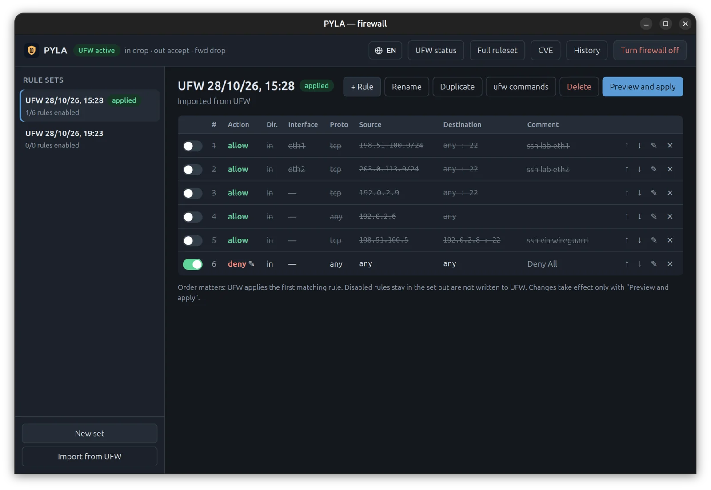
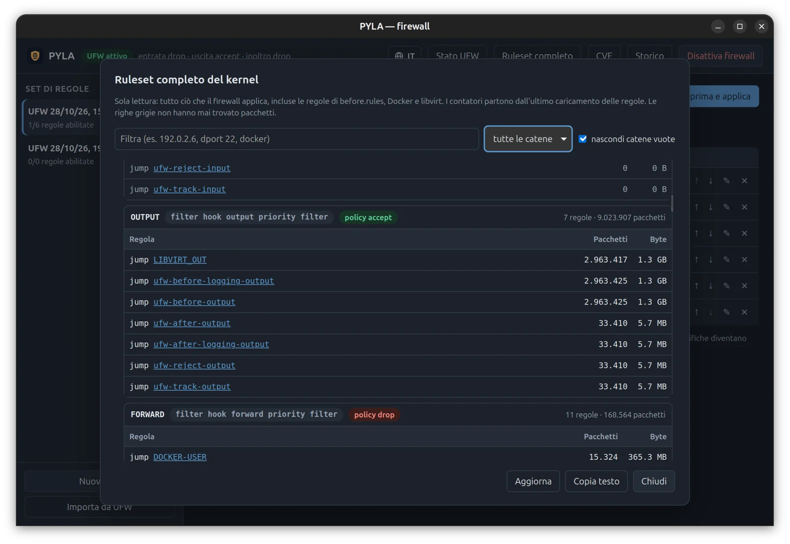

Protect Your Local Access
A firewall GUI for Ubuntu that makes kernel-level network posture visible: what's listening, what's exposed, what should never have been — in one screen, in plain language.
Kernel truth, made legible
ufw is powerful, but it lives in a terminal most people were never handed the keys to.
PYLA does not reinvent the firewall: it reads and drives the ufw / nftables engine already in your kernel.
Rule sets, not one-off commands
Preview the exact diff, apply atomically, automatic rollback if the result doesn't match.
Exposure check
Every listening service evaluated against the live kernel ruleset — IPv4 and IPv6 separately, with the matching rule.
Live nftables browser
Read-only view of what the kernel actually enforces: UFW, Docker, libvirt and every other table.
CVE-aware
Open kernel CVEs from the Ubuntu Security API, checked against the kernel you are actually running.
Reversible mitigations
Where a subsystem can be safely switched off, one click hardens it until the patch lands — and one click undoes it.
Least privilege
The GUI never runs as root. A small polkit helper answers only allow-listed commands — never a shell.
See it
Real screens from PYLA on Ubuntu 26.04 (Italian UI; English is one click away). Addresses replaced with documentation ranges.




How it works
Strict privilege separation: the only part that runs as root is small, auditable and allow-listed.

PYLA app
Rust + Tauri 2. Rule sets in a local SQLite database, diff preview, exposure and CVE views.
Authorisation
Dedicated action space.pyla.app.helper: you approve, the system decides.
pyla-helper
JSON in, JSON out. Absolute paths, cleared environment. Drives ufw, reads nft, writes clearly marked sysctl / modprobe files.
The only outbound request is a read-only query to the Ubuntu Security API for the CVE view. Backups of your rules are kept under /var/lib/pyla/backups.
Install
A self-contained package with the app, the privileged helper, the polkit policy and the desktop entry.
Prebuilt package (recommended)
# Ubuntu 26.04, amd64 curl -LO https://github.com/pyla-dev/pyla/releases/latest/download/pyla_0.2.1_amd64.deb curl -LO https://github.com/pyla-dev/pyla/releases/latest/download/pyla_0.2.1_amd64.deb.sha256 sha256sum -c pyla_0.2.1_amd64.deb.sha256 # must print OK sudo apt install ./pyla_0.2.1_amd64.deb
From source
git clone https://github.com/pyla-dev/pyla.git cd pyla cargo test # no root, no network cargo build --release sudo packaging/install-helper.sh # helper + polkit policy packaging/install-desktop.sh # launcher, no sudo
Boring on purpose
It's a security tool. It should be predictable and auditable.
Hot gates weren't about taller walls — they were about knowing exactly where the gates are, and who passes through.